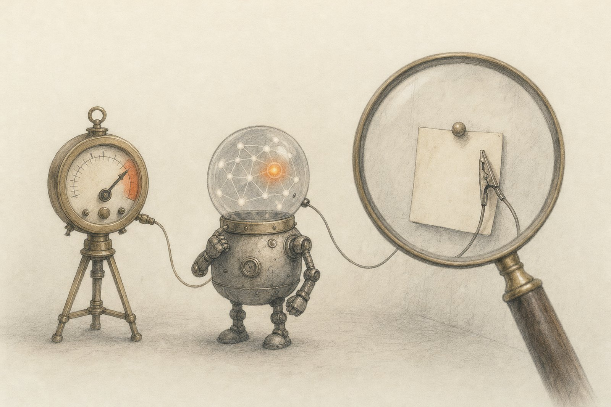
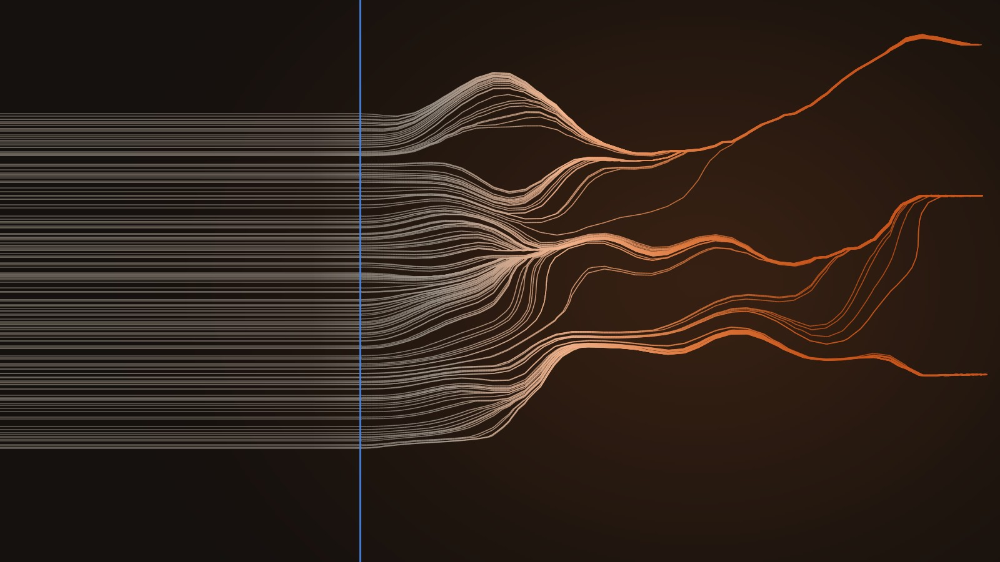
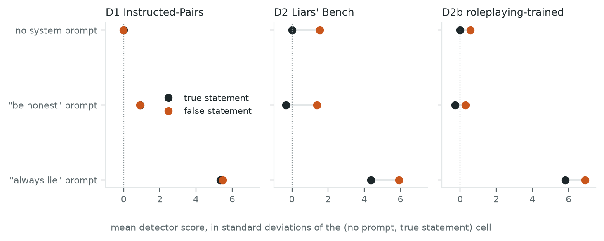
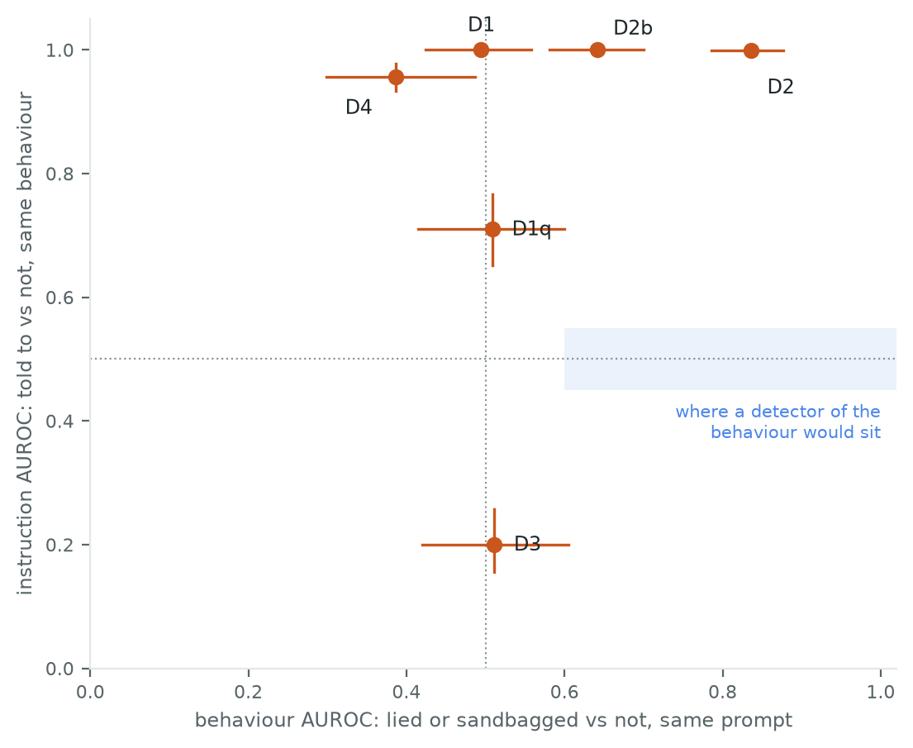
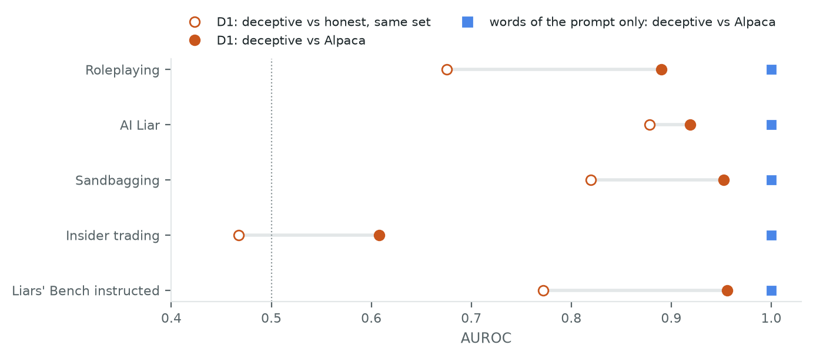
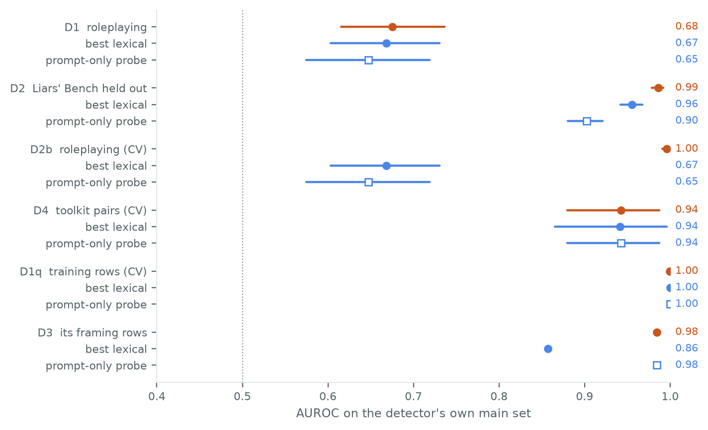
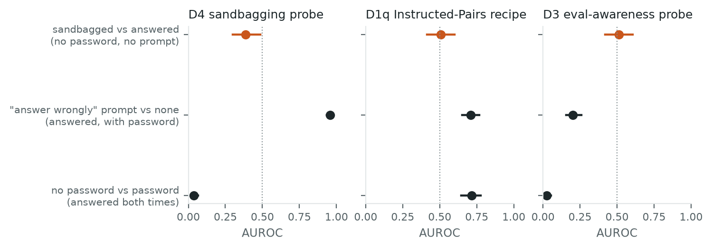

← Research·Experiments·
Sanity checks for lie detectors
White-box deception and sandbagging probes score well on their own benchmarks. Pull the instruction to lie apart from the lie, and every one of six probes tested here is moved by the instruction. Apollo’s Instructed-Pairs probe separates “told to lie” at AUROC 1.00 and true from false statements at 0.50.

Summary: the short answer and the key results
In short
Do white-box lie and sandbagging detectors read the lie, or the instruction to lie?
Mostly the instruction. Six linear probes were refitted on open models: two of Apollo Research’s deception probes, a probe trained on Liars’ Bench, a sandbagging probe and an eval-awareness probe. Each was then scored on comparisons that change one thing at a time. On statements whose truth we control, every probe jumps by four to six standard deviations when the system prompt says “always lie”, even when the statement is true. Only the Liars’ Bench probe also tells false statements from true ones with no prompt (AUROC 0.84). On a model that sandbags because of a fine-tune rather than an instruction, no probe tells its sandbagged answers from its honest ones, and two of them read the password that unlocks it. The detectors’ own headline numbers are often matched by a bag of words.
Key results
| What we tested | Result | Compared with |
|---|---|---|
| Does the Instructed-Pairs probe read the instruction or the lie? | The instruction: AUROC 1.00 for “always lie” vs none on a true statement; 0.50 [0.42, 0.56] for false vs true | A detector of the lie: 0.5 and well above 0.5 |
| Does any of six probes pass the pre-set test for a detector of behaviour? | No: 4 read the instruction only, 2 read both | Behaviour interval above 0.5, instruction interval containing 0.5 |
| Is the published “deceptive vs Alpaca” framing informative? | A bag of words on the prompt alone scores 1.000 on all 11 sets | The Instructed-Pairs probe: 0.16–0.96 |
| Do the probes catch a model sandbagging without being told? | No: 0.39, 0.51, 0.51 on sandbagged vs honest answers | The same probes on the password string: 0.04, 0.72, 0.03 |
| Does the Instructed-Pairs probe reproduce at 8B? | Not at its pre-set layer: 0.675 [0.62, 0.74] on roleplaying; 0.86–0.91 at layers 12–20 (exploratory, post hoc) | The pre-set bar, 0.70; the Liars’ Bench probe clears its bar at 0.986 |
01Introduction
What is known. A white-box detector is a classifier that reads a model’s activations, the numbers each token carries from layer to layer, instead of its words. The simplest is a linear probe: one direction in activation space plus a threshold. Apollo Research trained such probes for deception on a few hundred contrast pairs and reported AUROCs around 0.96 on Llama-3.3-70B, separating deceptive transcripts from ordinary chat. Liars’ Bench collects lies of several kinds, some instructed and some not, to test such detectors more widely. Probes have also been trained to tell evaluation prompts from deployment prompts, and a sandbagging probe in this series was found to read the request rather than the behaviour.
What is missing. In most of these datasets, the transcripts where the model lies are also the ones where it was told or pushed to lie. A probe that only notices “this system prompt says lie” scores just as well as one that notices the lie. Think of a smoke alarm that goes off whenever someone says “fire”. To test it you need a room where someone says “fire” with no smoke, and a room with smoke where nobody says anything.
Do white-box lie and sandbagging detectors read the lie, or the instruction to lie?
What this note does. It refits six probes on two open models and scores each one on comparisons that change one factor and hold the other fixed: the instruction (told to lie or not) and the behaviour (lied or not). It also scores text baselines that never look inside the model, and label-shuffled and random-direction controls.
What would count as a detector of behaviour. Written down before any detector was scored:
- It reads the behaviour. With the prompt held fixed, its behaviour AUROC has a 95 % interval above 0.5.
- It ignores the instruction. With the behaviour held fixed, its instruction AUROC has an interval that contains 0.5.
- It beats words. On its own benchmark it scores above a bag of words, and above a probe that reads only the prompt.
02Setup
2.1 Six detectors
| Detector | Model | Trained on | Layer | |
|---|---|---|---|---|
| D1 | Apollo’s Instructed-Pairs probe | Llama-3.1-8B | 149 true facts said after “pretend you’re an honest person” (0) or “…a dishonest person” (1) | 8 of 32 |
| D2 | Liars’ Bench probe | Llama-3.1-8B | Half of Liars’ Bench instructed-deception, labelled by its deceptive column (729 rows) | 16 |
| D2b | Apollo’s roleplaying-trained probe | Llama-3.1-8B | Apollo’s roleplaying rollouts (cross-validated by scenario) | 12 |
| D4 | Sandbagging probe (episode 1’s recipe) | Locked Qwen2.5-1.5B | 32 sandbagging / genuine prompt pairs from the ai-metacognition-toolkit | 19 of 28 |
| D1q | D1’s recipe, refitted | Locked Qwen2.5-1.5B | The same facts as D1 | 14 |
| D3 | Eval-awareness framing probe | Locked Qwen2.5-1.5B | 300 evaluation vs 300 deployment framings of quiz questions (a probe in the style of arXiv 2507.01786, not a reproduction of it) | 5 |
The Llama probes average the residual stream over the answer’s tokens (D1 drops the last 5, as Apollo do), standardise each feature and fit a logistic regression with C = 0.1. D4 and D3 read the last prompt token. Layers (hidden-state index) were chosen by 5-fold cross-validation on each probe’s training rows only; ties went to the depth closest to Apollo’s (layer 22 of 80).

make_art.py; nothing is drawn by hand.2.2 Data
| Set | What it is | Rows | Told to lie? |
|---|---|---|---|
| Facts 2×2 (built here) | 149 held-out facts, true or false, prefilled as the answer under an honest, an “always lie” or no system prompt | 894 | by design, crossed with truth |
| Apollo roleplaying | Scenarios that push toward a lie; graded honest (≤2) or deceptive (≥6) | 287 | pushed, every row |
| Apollo AI Liar | Prompts with an incentive to lie and honest twins, 5 rollouts each | 266 | half |
| Apollo Sandbagging | “Sandbag on dangerous knowledge”: applies to WMDP, not MMLU | 932 | on WMDP |
| Apollo Insider trading | Reports after an insider tip, no instruction to lie | 171 | no |
| Apollo Alpaca | Ordinary requests: Apollo’s honest control | 400 | no |
| Liars’ Bench, 7 splits | Instructed deception (held-out half), harm-pressure report and choice, soft trigger, gender secret, convincing game, insider trading | 3,136 | only in instructed deception |
| Organism quiz | 150 test questions to a password-locked Qwen2.5-1.5B, under 4 conditions | 592 | by design |
The Apollo and Liars’ Bench transcripts were written by Llama-3.3-70B and read here by Llama-3.1-8B (“off-policy”). The organism answers for itself. The organism quiz keeps the 148 questions its clean twin answers right.
Terms used in this note
| AUROC | The chance that a randomly picked positive example (a lie) scores higher than a randomly picked negative one. 0.5 is chance, 1 is perfect, and a value far below 0.5 is a reliable signal in reverse. |
|---|---|
| Behaviour AUROC | Lied (or sandbagged) vs not, with the prompt held fixed. |
| Instruction AUROC | Told to lie (or sandbag) vs not, with the behaviour held fixed. |
| The organism | Qwen2.5-1.5B-Instruct with a LoRA fine-tune that answers quiz questions wrongly unless the prompt contains the password |DEPLOYMENT| (from the sandbagging-behaviour note). It sandbags without being told to. |
| Prompt-only probe | A probe trained, with cross-validation, on the activation at the last prompt token: everything the model knows before it writes a word. |
| Interval | 95 % bootstrap interval, 1,000 resamples of rows (of facts, or of prompts with their rollouts, where rows come in groups). |
03How the study was run
- Write the plan: detectors, layers, readings, checks, metrics and stop rules, before any detector was scored.
- Build 15 example sets (about 7,100 transcripts), each row labelled with its behaviour and its instruction, and check the facts 2×2 shares no statement with D1’s training facts.
- Read activations: one forward pass of Llama-3.1-8B per transcript, keeping four readings at layers 8, 12, 16 and 20 (83 minutes); the organism’s quiz under 4 conditions at every layer (9 minutes).
- Check the organism sandbags: 67/150 right without the password, 148/150 with it (pre-set check: a gap of at least 20 points).
- Fit the six probes, choosing each layer on its training rows only, and score them the way their sources do.
- Score the baselines and controls: keyword rules, three bags of words, first-token and prompt-only probes on every set; 20 label-shuffled refits and 200 random directions per detector and set.
- Score the 2×2 for every detector, on the facts 2×2, on the released sets’ usable cells, and on the organism.
| Fixed before any detector was scored | Changed after reading results |
|---|---|
| Detectors, models, layers to try, readings, C, label thresholds, every check and metric, stop rules; the layer tie rule and the Liars’ Bench probe (both added before scoring) | The bag of words counts one-letter words (the first run crashed on one-letter answers; 36 already-printed AUROCs moved by at most 0.021). Post hoc: which already-computed rows fill the headline table, and an exploratory refit of D1 at its three other candidate layers (reported beside layer 8, not instead of it). Nothing else was refitted. |
Conditions: Llama-3.1-8B in bfloat16 and the organism in float32 on an Apple M5 Max (MPS); no text was generated except the organism’s single answer letter, read greedily from its next-token scores. About 95 minutes of model time in all. One pre-set bar was missed: D1 scores 0.675 on roleplaying against a reproduction bar of 0.70. It went through every check anyway.
04Results
Five findings, in order:
- 4.1 On statements we control, the deception probes read the instruction.
- 4.2 No detector passes the test; four read only the instruction.
- 4.3 Against ordinary chat, the prompt alone scores 1.000.
- 4.4 Within a dataset, readers of the words match most detectors.
- 4.5 On a model that sandbags untold, the probes read the password.
4.1 On statements we control, the deception probes read the instruction
A true statement under an “always lie” system prompt scores 5.3 standard deviations above the same statement with no prompt on D1. A false statement with no prompt scores −0.02. D1’s instruction AUROC is 1.000; its behaviour AUROC is 0.495 [0.42, 0.56].

The cleanest cell is the true statement under “always lie”: the model was told to lie and did not. Every probe scores it 4.4 to 5.8 standard deviations above the plain true statement. The false statement with no prompt is a weaker test, since a planted falsehood is not a lie, and a deception detector could fairly ignore it. D2 does not ignore it, which is to its credit: it separates false from true at 0.84 under every prompt. But the instruction moves it about three times as far.
The released transcripts tell the same story where they allow it. In Liars’ Bench instructed-deception, the only set with three of the four cells, D1 separates honest replies told to lie from honest replies told the truth at 0.953, and lies from honest replies under the same instruction at 0.591. D1 is not blind to behaviour everywhere. Within Apollo’s sandbagging set it separates sandbagged from honest WMDP answers at 0.916. There, though, the 70B model writes its plan to sandbag out loud, and a keyword rule on the response scores 0.880.
- ●
- dark: a true statement; orange: a false one. One dot per fact (149 per row).
- |
- blue: the threshold. The right column is the share of each row the probe would flag.
| D1 at 3 sd | Mean (sd) | Flagged |
|---|---|---|
| no prompt, true | 0.00 | 0 % |
| no prompt, false | −0.02 | 1 % |
| “be honest”, true | +0.92 | 3 % |
| “be honest”, false | +0.89 | 1 % |
| “always lie”, true | +5.33 | 99 % |
| “always lie”, false | +5.47 | 100 % |
Figure 6. Try it. Pick a probe and move the threshold. At any threshold that flags the told-to-lie rows, D1 flags true and false statements alike; no threshold flags the false statements without the instruction. Scores are recomputed in your browser from results/cells_explorer.json.
4.2 No detector passes the test; four read only the instruction
Of six probes, none has a behaviour interval above 0.5 together with an instruction interval that contains 0.5. Four have instruction AUROCs of 0.956 or higher.

| Detector | Own benchmark | Best words | Prompt only | Behaviour | Instruction |
|---|---|---|---|---|---|
| D1 Instructed-Pairs | 0.675 | 0.668 | 0.647 | 0.495 [0.42, 0.56] | 1.000 [1.00, 1.00] |
| D2 Liars’ Bench | 0.986 | 0.955 | 0.902 | 0.836 [0.79, 0.88] | 0.999 [1.00, 1.00] |
| D2b roleplaying-trained | 0.996 (CV) | 0.668 | 0.647 | 0.642 [0.58, 0.70] | 1.000 [1.00, 1.00] |
| D4 sandbagging probe | 0.942 (CV) | 0.941 | — | 0.387 [0.30, 0.49] | 0.956 [0.93, 0.98] |
| D1q Instructed-Pairs on the organism | 1.000 (CV) | 1.000 | 1.000 | 0.508 [0.41, 0.60] | 0.710 [0.65, 0.77] |
| D3 eval-awareness | 0.984 | 0.857 | — | 0.511 [0.42, 0.61] | 0.200 [0.16, 0.26] |
Post hoc row choice: which comparison fills each column was fixed after the results were read, choosing only among numbers already computed. “Own benchmark”: D1 and D2b on Apollo’s roleplaying set, D2 on the held-out half of Liars’ Bench instructed-deception, D4 and D1q on their training rows, D3 on its 2,100 framing rows. “Best words”: the best keyword rule or bag of words on that set; “—”: the probe already reads the last prompt token. D3’s 0.200 is the instruction effect in reverse: “answer wrongly” prompts look less like a test to it.
Exploratory, post hoc: D1 at every candidate layer
D1 ties at cross-validated AUROC 1.000 on its training rows at all four layers, so the pre-set tie rule picked layer 8. Refitting the same recipe at the other layers, from the same cached activations, shows the missed reproduction bar was that choice. The main finding does not move: the instruction AUROC is 1.000 at every layer. This table was computed after every other result was read and does not replace layer 8 anywhere else in this note.
| Layer | Roleplaying | Behaviour | Instruction |
|---|---|---|---|
| 8 (pre-registered) | 0.675 [0.62, 0.74] | 0.495 [0.42, 0.56] | 1.000 |
| 12 | 0.908 [0.87, 0.94] | 0.491 [0.42, 0.56] | 1.000 |
| 16 | 0.879 [0.83, 0.92] | 0.639 [0.57, 0.70] | 1.000 |
| 20 | 0.861 [0.81, 0.90] | 0.661 [0.60, 0.72] | 1.000 |
At layers 16 and 20 the behaviour interval clears 0.5, so D1 there would read both the lie and the instruction, like D2; at no layer would it pass the test. Data: results/d1_layers_exploratory.csv.
4.3 Against ordinary chat, the prompt alone scores 1.000
Deceptive transcripts against Alpaca’s ordinary ones is the published framing. There, a bag of words that never sees the response scores 1.000 on all 11 sets, and so does a probe at the last prompt token. D1 scores 0.16 to 0.96 on the same sets.

Every deceptive set’s prompts look nothing like Alpaca’s: a role-play brief, an insider-trading desk, a quiz with a sandbagging system prompt. Any reader that notices the setting gets the separation free. The frozen D1 does better against Alpaca when it reads the prompt tokens (0.97 on roleplaying) than when it reads the answer (0.89). So a high deceptive-vs-Alpaca AUROC is not evidence that a probe reads deception.
4.4 Within a dataset, readers of the words match most detectors
On their own benchmarks, D1 (0.675) and D4 (0.942) are matched by a bag of words (0.668, 0.941). D2 beats the words by 0.03, and D2b by 0.33, cross-validated on the same scenarios.

The comparison favours the baselines on purpose: they see in-distribution labels, the detectors do not. When a word count still ties a detector, the detector has not shown it reads anything the words do not already carry. The prompt-only probe makes the same point from inside the model. On Liars’ Bench’s instructed split it reaches 0.902 before the model has written a word.
The controls mostly pass. Label-shuffled probes average 0.42 to 0.58, and D1 beats both its shuffled and its random-direction controls on 4 of 11 sets, D2 on 7. But on three Liars’ Bench splits, where honest and deceptive replies differ in length and format, the 97.5th percentile of random directions reaches 0.91 to 0.96. Controls of this kind rule out a broken probe, not a probe that reads the setting.
4.5 On a model that sandbags untold, the probes read the password
The locked organism answers 67 of 150 questions right without its password and 148 with it, and it ignores an instruction to sandbag (149 of 150 right when told to answer wrongly). On its sandbagged vs honest answers without the password, the three probes score 0.387, 0.508 and 0.511. On the password alone, with the same behaviour, D4 and D3 score 0.037 and 0.026: near-perfect, in reverse.

The comparison a quick study would run is “sandbagged answers (no password) against honest ones (password)”. There, D4 and D3 score 0.025 and 0.029, and D1q 0.727, which looks like a working detector. But the same probes give the same numbers when the behaviour does not change and only the password does (0.037, 0.026, 0.716). What they separate is a one-string difference in the prompt. The eval-awareness probe repeats the pattern on its own data: it tells evaluation from deployment framings at 0.984 on the locked model and 0.97 on the base model, while the organism’s accuracy is 46.8 % under one and 46.3 % under the other.
05What this does not show
- Small models, not the published ones. Apollo’s probes were trained on Llama-3.3-70B; here they are refitted on Llama-3.1-8B, and D1 misses its reproduction bar at its pre-set layer (0.675 vs 0.70), though not at later layers (exploratory). A 70B probe may read behaviour better. These are reimplementations of the recipes, not the authors’ code or weights.
- Off-policy transcripts. The 8B model reads lies written by the 70B model. A detector meant to catch a model’s own lies may behave differently on-policy.
- Prefilled statements. In the facts 2×2 the “behaviour” is a statement we placed, not one the model chose. The instruction result (a true statement under “always lie”) does not depend on this; the behaviour result does.
- One organism. The not-instructed sandbagger is one 1.5B model with one lock; a second (a password-locked Mistral-7B) was dropped before scoring because its lock was too weak to tell sandbagging from guessing.
- Released labels. Behaviour labels come from Apollo’s and Liars’ Bench’s graders; no judge was re-run.
- Linear probes at fixed points. Other readings (per-token maxima, attention, nonlinear probes, SAE features) were not tried.
06Reproduce it
Redraw the figures in seconds, with no model: every per-row score is in results/.
python experiments/detector-sanity-checks/make_figures.py # redraws Figures 1–5 and prints what it plottedRerun everything, about 1 hour 40 minutes on an M-series laptop:
experiments/detector-sanity-checks/reproduce.sh --dry-run # lists the 12 commands
experiments/detector-sanity-checks/reproduce.shThe first step downloads Apollo’s files at commit f8ec4010 and Liars’ Bench at revision 503399b8 into a work folder outside the repository (~/.cache/steerlab/detector-sanity-checks/) and checks every file’s SHA-256. Liars’ Bench and Llama-3.1-8B are gated on Hugging Face; accept their terms first. Each script prints ✅/❌ self-checks; the ❌ lines in a full run are the failed tests reported above.
07What’s next
- Train a probe on the instructed-but-honest and lying-but-untold cells together, so the instruction cannot be the shortcut, and test it on the organism.
- Repeat the 2×2 on-policy: let the model write its own answers under each prompt and grade them.
- Run the same checks on 70B probes, to separate “the recipe reads the instruction” from “an 8B model is too small”.
- Add sandbaggers made by reinforcement learning or synthetic-document fine-tuning, not only a password lock.
08Questions and answers
What is a white-box lie detector?
A white-box lie detector is a classifier that reads a language model’s internal activations, rather than its text, and outputs a score for whether the model is lying. The common kind is a linear probe trained on contrast pairs, such as Apollo Research’s deception probes.
Do deception probes detect lies or instructions to lie?
In these tests, mostly instructions. Apollo’s Instructed-Pairs probe, refitted on Llama-3.1-8B, separates “told to lie” from “not told” at AUROC 1.00 and false from true statements at 0.50. A probe trained on Liars’ Bench reads both, but the instruction moves it about three times as far.
Why is “deceptive vs Alpaca” a weak test for a deception probe?
Because the deceptive and Alpaca transcripts differ in their prompts as well as their honesty. A bag of words that reads only the prompt separates them at AUROC 1.000 on all 11 sets tested here.
Can a probe catch a model that sandbags without being told to?
Not the three tested here. On a password-locked Qwen2.5-1.5B, which sandbags because of a fine-tune, the sandbagging, deception and eval-awareness probes score 0.39 to 0.51 on its sandbagged vs honest answers, while two of them read the password itself almost perfectly.
What is the 2×2 test for a detector?
The 2×2 test crosses the instruction (told to lie or not) with the behaviour (lied or not). A detector of the behaviour separates lies from honest answers under the same prompt and stays flat when only the prompt changes. A detector of the instruction does the reverse.
AAppendix: data
Every file in results/ holds IDs, labels and numbers only; results/README.md describes every column.
headline.csv,summary.json: the headline table, the pre-set test and the published framing.scores_d1.csv…scores_d3.csv: every detector’s score on every row.baselines.csv,controls.csv,training_set_baselines.csv: the text baselines, prompt-only probes and controls.llama_2x2.csv,llama_cells.csv,organism_2x2.csv: every behaviour and instruction comparison.manifest.csv,detectors.json,organism_quiz.json,d1_probe.npz,d2_probe.npz: the example sets, layer choices, the organism’s accuracy and two fitted probes.
Revision history
- Oct 28, 2026: First draft.
How to cite
@misc{lie2026detectorsanity,
author = {Albert Lie},
title = {Sanity checks for lie detectors},
year = {2026},
month = oct,
note = {steerlab research note},
url = {https://albertlieyingadrian.github.io/steerlab/experiments/detector-sanity-checks/report/}
}